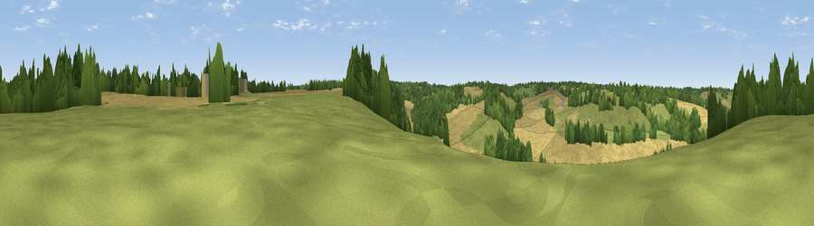

Viewpoint near Stelling Minnis
#40099 in England · top 66% of its area beats it · near Stelling MinnisWhere it is
The exact computed spot (TR 12675 46725). Click the marker for map links.
The view, rendered

A 360° render of this exact spot computed from the terrain model, tree cover and land cover — summer colours, afternoon light, calibrated against photographs of famous viewpoints. Real trees, hedges and buildings will differ in detail.
The panorama
Grey silhouette: terrain skyline in each direction (720 bearings, Earth curvature and refraction included). Dashed green: skyline with trees (+15 m) and buildings (+8 m) as obstacles. Blue strip: how far the ground is visible on each bearing.
Where the view opens
Wedge length = distance to the farthest visible ground on that bearing (vegetation-aware). Rings at 10, 25 and 50 km.
What fills the view
39% cropland · 39% grassland · 21% woodland ·
Angular shares of the visible panorama (visual magnitude), not map area. Landscape diversity 0.48 (0–1 Shannon).
Key numbers
More beautiful places nearby
The staircase of upgrades: each row has a higher view potential than everything closer. Driving times are estimates from straight-line distance, calibrated against real road routing — check an actual route before setting out.
| Place | Direction | Drive | Score |
|---|---|---|---|
| Viewpoint near Stelling Minnis | N · 1 km | ~2 min | 26.5 |
| Viewpoint near Hastingleigh | SW · 5 km | ~10 min | 70.2 |
| Viewpoint near Brabourne | SW · 5 km | ~11 min | 71.6 |
| Viewpoint near Brabourne | SSW · 5 km | ~11 min | 71.9 |
| Tolsford Hill | SSE · 9 km | ~18 min | 77.9 |
| Viewpoint near Capel-le-Ferne | SE · 14 km | ~26 min | 80.2 |
| Viewpoint near Willingdon | SW · 71 km | ~94 min | 83.4 |
| Wilmington Hill | SW · 72 km | ~96 min | 85.4 |
51.18018, 1.04151 · source: screening · position refined by local search. Computed location — check access rights before visiting.